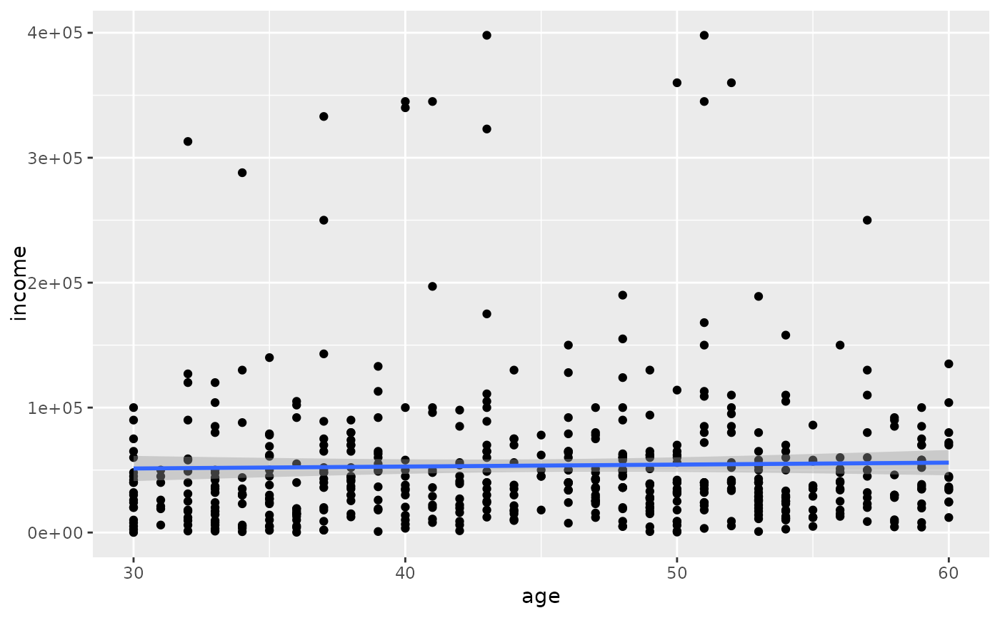

Results from the US Census American Community Survey, 2012.
acs12
Format
A data frame with 2000 observations on the following 13 variables.
- income
Annual income.
- employment
Employment status.
- hrs_work
Hours worked per week.
- race
Race.
- age
Age, in years.
- gender
Gender.
- citizen
Whether the person is a U.S. citizen.
- time_to_work
Travel time to work, in minutes.
- lang
Language spoken at home.
- married
Whether the person is married.
- edu
Education level.
- disability
Whether the person is disabled.
- birth_qrtr
The quarter of the year that the person was born, e.g. `Jan thru Mar`.
Source
https://www.census.gov/programs-surveys/acs
Examples
#> #>#> #> #>#> #> #>library(ggplot2) library(broom) # employed only acs12_emp <- acs12 %>% filter( age >= 30, age <= 60, employment == "employed", income > 0 ) # linear model ggplot(acs12_emp, mapping = aes(x = age, y = income)) + geom_point() + geom_smooth(method = "lm")#>#> # A tibble: 2 x 5 #> term estimate std.error statistic p.value #> <chr> <dbl> <dbl> <dbl> <dbl> #> 1 (Intercept) 46579. 13600. 3.43 0.000664 #> 2 age 156. 297. 0.524 0.600# log-transormed model ggplot(acs12_emp, mapping = aes(x = age, y = log(income))) + geom_point() + geom_smooth(method = "lm")#>#> # A tibble: 2 x 5 #> term estimate std.error statistic p.value #> <chr> <dbl> <dbl> <dbl> <dbl> #> 1 (Intercept) 9.81 0.256 38.3 2.47e-152 #> 2 age 0.0138 0.00559 2.46 1.41e- 2